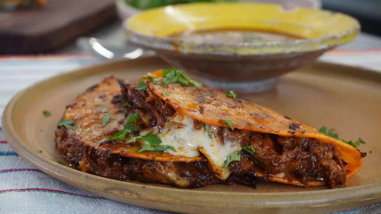

Birria Tacos

Description
Birria, a.k.a. tacos de birria, is a Mexican dish of meat (usually goat or beef) stewed in its braising liquid until it reaches a melt-in-your-mouth texture.
Traditionally, it gets its flavor from dried chile peppers. Birria can be served alone as a stew or on corn tortillas.
Ingredients
These are the ingredients you'll need to make this top-rated birria tacos recipe:
- Dried chile peppers: The flavorful birria starts with dried guajillo chile peppers, chile de arbol peppers, and ancho chiles. For a bit of extra heat, don't remove all the seeds.
- Beef: Beef chuck roast is perfect for braising for hours. When you're done, the meat will shred incredibly easily.
- Seasonings: You'll need salt, pepper, fresh garlic, whole cloves, cinnamon, cumin, thyme, marjoram, and oregano.
- Olive oil: Sear the meat in olive oil before you add the braising liquid.
- Tomatoes: Grill Roma tomatoes before blending them with other ingredients to unlock extra layers of flavor.
- Vinegar: Two tablespoons of white vinegar adds even more acidity to the braising liquid.
- Tortillas: Use store-bought or homemade corn tortillas.
- Onion and cilantro: Finish each taco with chopped onion and fresh cilantro for a final punch of flavor and texture.

How to make Birria taco
You'll find the full, step-by-step recipe below — but here's a brief overview of what you can expect when you make these tacos de birria:
- Boil the dried peppers for 5 minutes, then remove from heat and let the peppers soak until the water is cool. Drain, reserving some water.
- Season the beef and sear on all sides in oil in a Dutch oven.
- Grill the tomatoes until the skin is blistered and begins to peel.
- Blend the soaked chili peppers with the reserved chile water, tomatoes, vinegar, and seasonings.
- Strain the sauce and pour over the meat. Cover the Dutch oven and cook until the meat begins to fall apart, basting often. Allow the meat to rest, then shred.
- Warm the tortillas on the griddle. Fill each tortilla with meat, onions, and cilantro.
Nicole's Best Birria Taco Tips
- For the perfect sear, use a paper towel to make sure your meat is really dry before adding it to the hot pan. If it doesn't sizzle right away, your pan is not hot enough!
- "When I'm searing something I'm eventually going to shred anyway," Nicole says, "I like to cut it into chunks instead of leaving it as one big piece. That way you've got more surface area to get those good brown crispy bits."
- Skim the fat off the top of the braising liquid when you're done cooking the meat. But don't throw it out and waste all that precious flavor — use it to cook your tortillas before assembling the tacos.
Thank you!
Go back to the recipe list